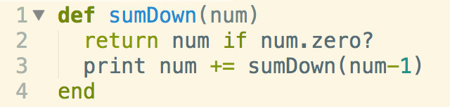
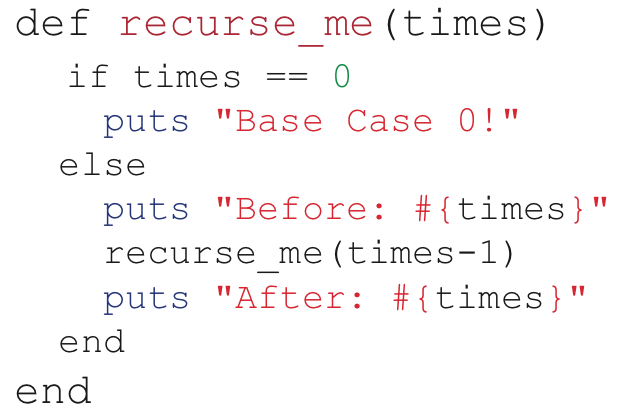
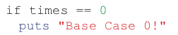
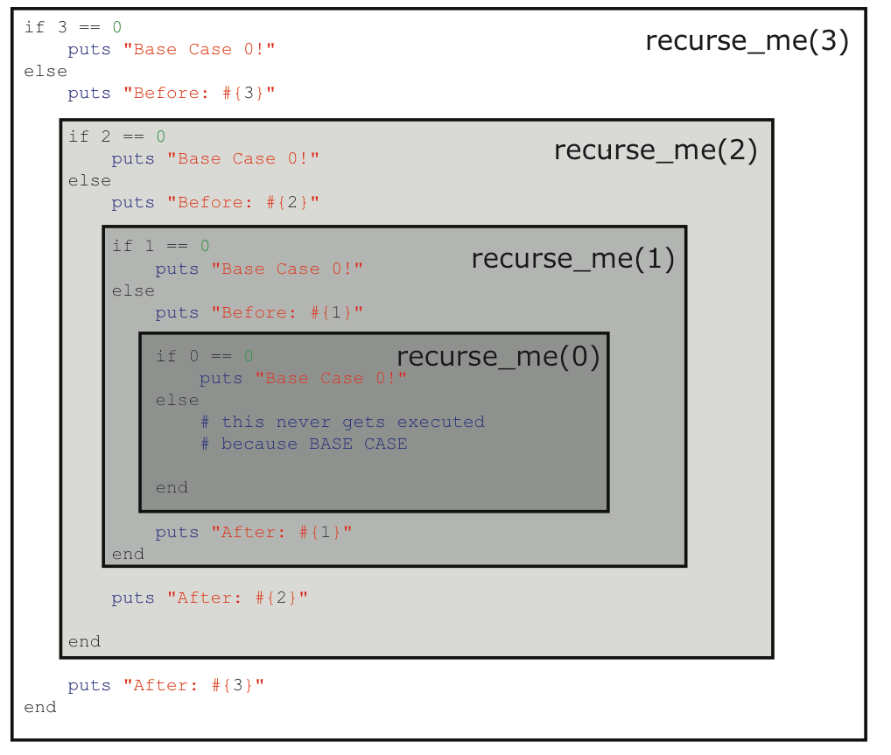

Recursion and the callstack.
The best way I can explain recursion is by using an example. Recursion is the ability to have a method call itself repeatedly. You could say that recursion would cause the method to behave similarly to a loop. Take the following for example.
By calling the sumDown method with a parameter of 10, I would cause the sumDown method to create a "callstack" starting with passing a parameter of 10, then a parameter of 9, of 8, of 7, to 0 where return num if num.zero? will stop the callstack. During the time the callstack is created there are no returns, so my function will not do anything aside from building the callstack until my recursive method parameter reaches 0. Then the method will execute from the most recently created back up to 10. This is known as LIFO (Last in First out)
Let's study another example of Recursion.
This time I will have a method recurse_this like so:
The very first thing that our recursion method must include is a way to break out of our loop, or else we will cause an error as our callstack adds one too many method calls(Known as a Stack Overflow). This line of code that breaks our loop is called the Guard Clause. In our case, that would be the line:
The next few lines of code show what happens during our recursive loop. As we add method calls to our callstack, we will display a message to our screen because
shows up before our recursive call on the very next line. As we recursively call our method, our last line is added to the callstack, so we don't see anything at this time. However, once we reach the end of the callstack as specified by our guard clause,(i.e. times == 0), the rest of our method will execute based on LIFO. This is one main difference between a while loop and recursion, as a while loop will immediately terminate when it hits its guard clause. One DBC instructor was able to visualize it like so:
Therefore, what you should see as you execute this method is:
- "Before: #{3}
- "Before: #{2}
- "Before: #{1}
- "After: #{1}
- "After: #{2}
- "After: #{3}